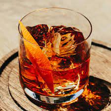

Whisky Old Fashioned

How to make a Whisky Old Fashioned
This recipe explains how to make a simple Whisky Old Fashioned.
Ingredients
- Whisky - I find bourbon works the best for me, but any type is good
- sugar
- angostura bitters
- orange
- maraschino cherry
Steps
- Add 2 tea spoons of sugar and stir with 2 dashes of angostura bitters and a splash of water
- Add the whisky
- Cut some orange peel and add to the glass. If you want the bitter taste of the orange around the glass, rub around the rim.
- Add a maraschino cherry
- Add ice if you want to
Important: When mixing the sugar, make sure it fully dissolves